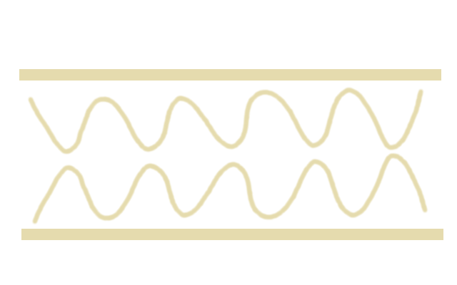
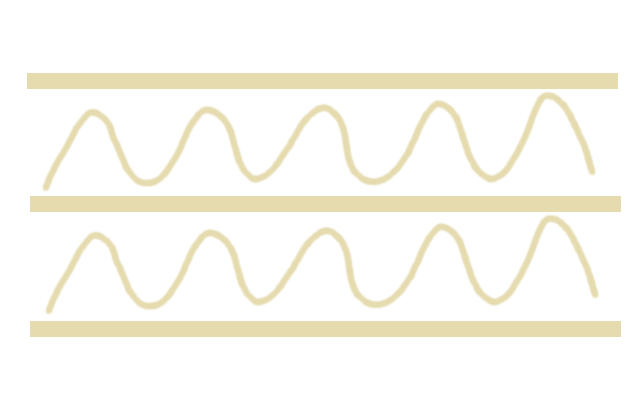

Ciekawość to pierwszy stopień do... wiedzy.
Wiedza to ogół wiarygodnych informacji o rzeczywistości, wraz z umiejętnością ich wykorzystywania. Tak mówi Encyklopedia Powszechna, a więcej do powiedzenia w tej materii napewno miałby Platon, Sokrates czy inny Arystoteles. Nam wystarczy pierwsza definicjia i zgodnie z nią, będziemy przedstawiać wiarygodne informacje o produkcji papieru, a czasem pokażemy jak tą wiedzę wykorzystać.
Krótka historia papieru
Wykorzystanie drewna w produkcji papieru, to dość nowy wynalazek. Kiedyś do produkcji papieru wykorzystywano trzcine.
Egipt. Dziś kojarzy się głównie z piramidami, Sharm El Sheikh, nurkowaniem na pięknych rafach koralowych i terrorystami. Jednak Egipt, to także kolebka naszej cywilizacji, w której to zaczyna się historia papieru. Egipcjanie byli pionierami w tej dziedzinie i produkowali papier z trzciny papirusowej (pl. Cibora papirusowa, łac. Cyperus papyrus). Najstarsze zapiski na papirusie, pochodzą z roku 2400 p.n.e i prawdopodobnie już wtedy był używany jako substytut papieru. Papirus dzielił się na dwa gatunki:
- hieratyczny, który miał 26cm szerokości i był produkowany z węwnętrznych części łodyg (lepszej jakości papirus)
- kupiecki, który miał 12cm szerokości i był produkowany z zewnętrznych części łodyg (gorszej jakości papirus)
Papirus lepszej jakości, był oczywiście używany do pisania. Ten gorszej jakości do pakowania produktów. Produkcja papirusu polegała na cięciu miąższu łodygi na cienkie i szerokie paski, które następnie były układane obok siebie. Kolejna warstwa układana była w poprzek, żeby finalnie przyciąć wystające końce i sklepać całość w arkusz, który był suszony na słońcu i wygładzany muszlą lub kością słoniową. [1]
Papirus, to jeszcze nie papier, ale przez wiele wieków, był używany jako nośnik pisma i dlatego o nim piszemy. " Prawdziwy" papier wynaleźli Chińczycy. Nie wiadomo kiedy to się dokładnie stało. Według chińskich kronik papier został wynaleziony w 105 r.n.e przez pisarza kancelarnego z dworu cesarza He Di, który to opracował metodę na papier czerpany. Jednak archeologom udało się znaleźć skrawek papieru z Chińskimi znakami, datowany na 8 rok p.n.e. Zatem możliwe, że rok 105 n.e jest datą, kiedy to udało się opracować metodę masowej produkcji papieru. Kancelista Cai Lun, do produkcji papieru używał początkowo kory drzew, jedwabiu i sieci rybnych. Po opracowaniu metody na papier czerpany, do produkcji wykorzystywano tylko szmat jedwabnych i lnianych. Produkcja papieru była tajemnicą, której Chińczycy strzegli przez około 700 lat. Następnie blisko roku 750 n.e. Arabowie pojmali jeńców chińskich, którzy to ujawnili metodą produkcji papieru metodą czerpaną. [2]
Dzięki temu papier upowszechnił się na ziemiach Arabskich skąd następnie trafił do Europy. Europa początkowo kupowała papier od Arabów, którzy mieli swojej papiernie w Hiszpanii oraz we Włoszech. Jednak papier Arabski nie nadawał sie zbyt dobrze do naszego klimatu, ponieważ do jego produkcji używano skrobii, która lepiej sprawdzała się w suchym i gorącym klimacie. Pierwsze europejskie papiernie, powstały w XII wieku w Hiszpanii oraz w XIII we Włoszech. Pierwsza Polska papiernia powstała w XV wieku. Proces produkcji papieru został przyśpieszony po wprowadzeniu w 1670r. maszyny (tzw. Holendra), która umożliwiała mielenie surowaca do postaci pulpy, za pomocą noży umieszczonych w kadzi. Masowa produkcja papieru zaczęła się od 1867r. kiedy to na wystawie w Paryżu przedstawiono urządzenie do produkcji papieru z alternatywnych surowców, czyli ścierów drzewnych i celulozy. [2]
Stale rosnące zapotrzebowanie na papier i tekture, przyczyniło się do rozwoju technologii i maszyn papierniczych, które w dzisiejszych czasach są w stanie produkować np. papier gazetowy z prędkością 100 km/h. Ze względu na rosnące zapotrzebowanie, dużo papieru na rynku pochodzi z recyklingu. Recykling papieru pozwala na oszczędzanie naszych zasobów leśnych, energii, a także zmniejszenie ilości śmieci na wysypiskach. Poniżej kilka papierowych faktów:[3]
Recykling tony papieru pozwala zaoszczędzić 17 drzew
Około 73% każdego wysypiska śmieci to papier i opakowania tekturowe
Papier toaletowy zaczęto produkować w IX wieku w Chinach
37% amerykańskiej pulpy papierowej pochodzi z recyklingu
Podczas całego życia, mieszkaniec Ameryki zużywa papier, do produkcji którego potrzeba 465 drzew
Pierwszy znak wodny został użyty w XIII wieku we Włoszech
Każdego dnia Amerykanie kupują 66 milionów gazet i 44 miliony wyrzucają od razu do kosza
Laboratorium biurowe
Gramatura, Semi chemicals fluting, kraft, kraft topliner, wellenstoff itp. Nomenklatura papiernicza może przyprawić o zawrót głowy. Jak "zwykły" odbiorca może sprawdzić jakość dostarczonego opakowania? W jaki sposób sprawdzić czy nie zostaliśmy oszukani?
Pan Kowalski z firmy X proponuje, że sprawdzi naszą ostatnią dostawę opakowań tekturowych, w labolatorium. Czy naprawdę potrzebne jest do tego labolatorium? Czy nie możemy wykonać takiego "badania" w zaciuszu naszego biura? Napewno nie jesteśmy całkiem bezbronni, ale zanim spróbujemy odpowiedzieć na to pytanie poznajmy podstawy. Może was zaskoczę, ale głównym surowcem do produkji opakowań tekturowych jest tektura falista, a głównym surowcem do produkcji tektury falistej jest papier. Wyróżniamy dwie grupy papierów, różniących się właściwościami i zastosowaniem: Linery, których używa się na warstwy płaskie oraz flutingi, na warstwy pofalowane.
Linery w zależności od sposobu produkcji i składu dzielimy na:
- Kraftlinery
- Testlinery
Kraftlinery (potocznie Kraft), to najlepsze i najbardziej poszukiwane papiery, a co za tym idzie drogie. Wszystko dlatego, że mają najlepsze właściwości wytrzymałościowe. Kraftliner składa się głównie z masy celulozowej z niewielkim dodatkiem makulatury. Testlinery, to tanie papiery słabszej jakości, produkowane głównie z makulatury. Testlinery składają się z dwóch warstw papieru. Górna warstwa może być produkowana z masy celulozowo siarczanowej, jednak ze względu na ciągły wzrost cen mas celulozowych, testlinery są najczęśiej produkowane z mas wtórnych.
Flutingi także dzielimy na dwie grupy:
- flutingi makulaturowe (Wellentstoff)
- flutingi półchemiczne (SC Semi Chemical)
Flutingi makulaturowe wytwarza się tylko z masy masy wtórnej (makulatura). Dla Poprawienia parametrów mechanicznych takiego papieru, wprowadza się w jego strukturę skrobię. Skrobię dodaje się do masy makulaturowej albo na powierzchnię papieru. Proces ten nazywa się potocznie zaklejaniem. Fluting półchemiczny w 70% składa się z masy półchemicznej, otrzymywanej najczęściej z drzew liściastych (głównie brzoza). 30% flutingu półchemicznego stanowi makulatura. [1]
Tektura falista, to tektura utworzona z minimum jednej warstwy papieru płaskiego (liner) oraz jednej warstwy papieru pofalowanego (fluting). Takie dwie warstwy składają się na tekturę falistą dwuwarstwową.
Tektura dwuwarstwowa
Tektura trójwarstwowa
Tektura czterowarstwowa
Tektura pięciowarstwowa
Kolejne rodzaje tektury falistej to: tektura trójwarstwowa, czterowarstwowa, pięiowarstwowa oraz siedmio, a nawet dziewięciowarstwowa. Jak widać na powyższych obrazkach, każdy rodzaj tektury ma ułożone naprzemian, warstwy płaskie oraz pofalowane. Tektury cztero, siedmio i dziewięciowarstwowe są rzadziej spotykane.
Fala warstwy pofalowanej (flutingu) może mieć różny profil, który jest zależny od wałów ryflowanych, użytyh podczas produkcji. Mamy 10 rodzajów fal, jednak najczęściej stosowane to: B, C, E. Cechy charakterystyzne fal to:
- podziałka fali
- wysokość fali
- współczynnik pofalowania
Spójrzcie na poniższy rysunek. Wysokość fali zaznaczona jest literką A. To odległość od podstawy do wierzchołka. Podziałka fali jest zaznaczona literką B i jest to odległość między wierzchołkami. Współczynnik pofalowania, to stosunek długości papieru przed pofalowaniem, do długości po sfalowaniu.
Parametry profili danej fali są zależne od rodzaju wałów ryflowanych użytych podczas produkcji i mogą się różnic w zależności od producenta. Poniżej przedstawiam przedziały w których te parametry powinny się mieścić. Pod uwagę bierzemy tylko fale B, C, E. [1]
| Profile | Współczynnik pofalowania | Wysokość [mm] | Podziałka [mm] |
|---|---|---|---|
| E | 1,20 - 1,35 | 1,1 - 1,4 | 3,2 - 3,7 |
| B | 1,26 - 1,48 | 2,3 - 2,8 | 6,1 - 6,6 |
| C | 1,35 - 1,56 | 3,4 - 4,0 | 7,4 - 8,3 |
Zagadnienia przedstawione powyżej, to podstawy które należałoby wiedzieć, zanim zamienimy nasze biuro w laboratorium. Spróbujmy zatem odpowiedzieć na pytanie. Czy możemy zbadać karton w biurze, bez pomocy ze strony laboratorium, którą to oferuje wspomniany na początku Pan przysłowiowy Kowalski? Odpowiedź brzmi - Nie wszystkie właściwości możemy zbadać sami, ale niektóre tak. Spróbujmy więc skupić się na tym, co możemy zrobić sami w biurze.
Gramatura papieru, tektury to waga jednego metra kwadratowego. Gramatura tektur wielowarstwowych jest znormalizowana, w postaci szeregów gramatur liczb naturalnych. Jednak u każdego producenta, szeregi te mogą wyglądać inaczej. Gramatura może mieć odchylenia i tak przeciętne tolerancje dla gramatur 180g/m2 - 249g/m2 to 6%, a dla gramatur 249g/m2 - 449g/m2 to 5%. Do badania gramatury badanej tektury, potrzebna nam będzie waga laboratoryjna z dokładnością przynajmniej 0,1g. Metalowy wykrojnik o wymiarach 10cm x 10cm do wycięcia próbki oraz kawałek tektury falistej do zbadania. Wzór na gramaturę to:
g = m/A * 10000
g - gramatura próbki, m - masa próbki w gramach, A - powierzchnia próbki w cm2
Badanie przeprowadzamy w trzech krokach:
- wycinamy próbkę 10cm x 10cm (jeżeli nie mamy tak dużego kawałka, to może być 5cm x 5cm)
- ważymy na wadze
- podstawiamy dane do powyższego wzoru
Jeżeli wycięty przez nas kawałek waży 9g, to oznacza, że: g = 9g/100cm2 * 10000 = 900g/m2. W ten sposób sprawdziliśmy jaka jest gramatura kartonu i czy dostawca nas nie oszukuje. Należy pamiętać, że aby wyniki były dokładne, trzeba poddać próbkę klimatyzowaniu w temp. 23*C i wilgotności około 50% przez kilka godzin. [2] Badanie gramatury to nie wszystko, co możemy zrobić. Możemy również sprawdzić jaką gramaturę ma każda z warstw naszej tektury. Jeżeli mamy trochę doświadczenia i determinacji, to sprawdzimy także jakiego rodzaju papierów użyto do produkcji naszego pudła, ale o tym w kolejnym artykule...